Chat in
Morse code.用摩尔斯电码
聊天。
DitMesh is a free, open-source Morse messenger on the Tox peer-to-peer network. Key with a straight key or iambic paddles, by touch or keyboard, in private chats and group nets. There is no server, no phone number and no text mode: every message is sent and heard as code.DitMesh 是基于 Tox 点对点网络的免费开源摩尔斯电码聊天工具。用触摸或键盘操作直键、双桨，在单聊和群组网络中拍发。没有服务器，不要手机号，也没有文字模式：每条消息都以电码发出、以电码收听。
All platforms & packages全部平台与安装包 · Source code源代码
●latest最新版本 v1.1.0 · 2026-10-18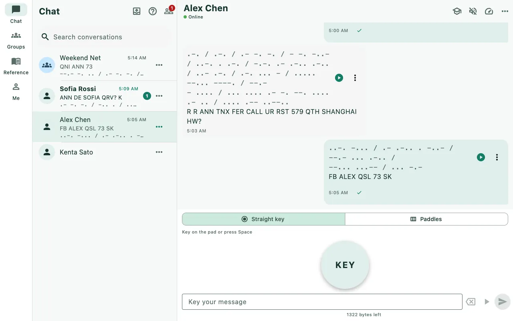
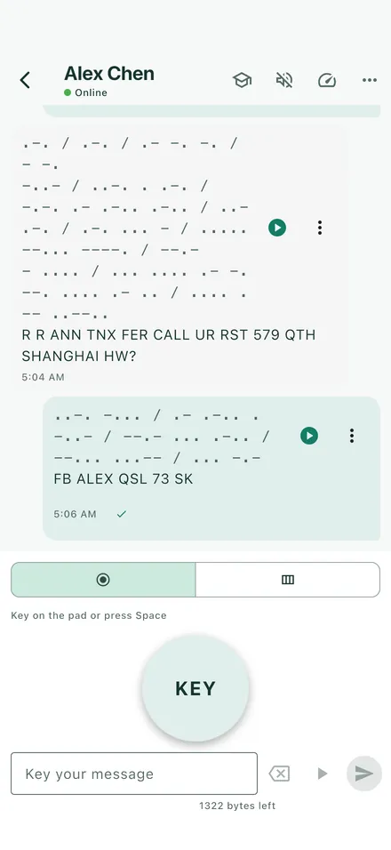
01 — why DitMesh01 — 为什么是 DitMesh
A real Morse contact, carried peer to peer.真正的摩尔斯通联，点对点传递。
Most chat apps let you type. DitMesh asks you to key. It is built for people who want to send and hear the code, with nothing in the middle.大多数聊天应用让你打字，DitMesh 请你拍发。它为想要真正发报、收听电码的人打造，中间没有任何服务器。
Morse-only by design只用电码，是设计初衷
Key, preview, pre-listen and correct. The decoded draft is read-only, so the code you send is the code you keyed. There is no ordinary text-chat mode.拍发、预览、试听、纠错。解码后的草稿只读，你发出去的就是你拍下的电码。不提供普通文字聊天模式。
No server in the middle中间没有服务器
Messages travel end-to-end encrypted over Tox. There is no messaging or push server, and no developer server stores undelivered messages.消息经 Tox 端到端加密传输。没有聊天或推送服务器，也没有开发者服务器替你保存未送达的消息。
An identity that lives on your device身份只在你的设备上
Your Tox identity is generated locally and can be protected with a password. Share it as a Tox ID or QR code; back it up with an encrypted export.Tox 身份在本地生成，可用密码保护。以 Tox ID 或二维码分享，用加密导出做备份。
02 — what it does02 — 功能详解
Everything for a real Morse conversation.一次真正的摩尔斯通联，所需的一切。
Chat, Groups, Reference and Me: four destinations, the same on phone, tablet and desktop.聊天、群组、参考、我的：四个入口，在手机、平板和桌面上保持一致。
keying拍发
Key by hand, keep the rhythm.亲手拍发，保留节奏。
Use the on-screen pad or a physical key. DitMesh decodes your marks as you go and records their real timing, so a friend on DitMesh can replay your fist, not a machine's.用屏幕按键或实体按键拍发。DitMesh 边拍边解码，并记录真实时序，对方用 DitMesh 收听时听到的是你的手法，而不是机器合成。
- Straight key & iambic paddles: by touch, keyboard or configurable device key bindings.直键与双桨：支持触摸、键盘及可自定义的设备按键映射。
- Preview before sending: Morse preview, pre-listen, correction and a byte counter.发送前预览：电码预览、试听、纠错，以及剩余字节提示。
- Real timing kept: drafts, history, offline sends and selected backup components preserve mark and gap timing.保留真实时序：草稿、历史、离线发送和所选备份内容都会保留点划与间隔时序。
- A guided first contact: a dismissible guide opens note-to-self for real keying and listening.新手引导：可关闭的引导会打开“发给自己”，让你先实际拍发和收听。
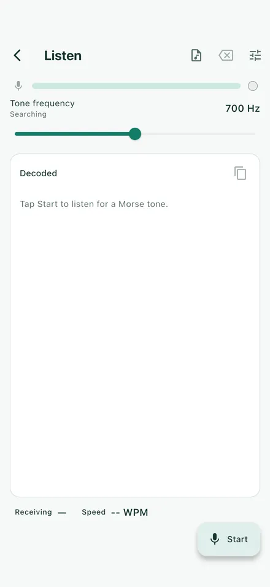
listening收听
Hear it your way, at your speed.按你的方式，用你的速度收听。
Every message has a player. Choose the sender's original rhythm or your own speed and Farnsworth spacing, and listen before you look.每条消息都带播放器。可选发送方的原始节奏，或你自己的速度与 Farnsworth 间距，先听后看。
- Word-level control: pause, resume, jump between words, repeat or loop a range, with the current word highlighted.逐词控制：暂停、继续、按词跳转、重复或循环一段，当前词高亮。
- Listen first, reveal later: listen-only and copy exercises keep the text hidden until you choose.先听后揭晓：纯收听与抄收练习会隐藏文字，直到你主动揭晓。
- Audio, haptic or flash, with listening preferences saved per conversation.声音、振动或闪光输出，收听偏好按会话保存。
- Decode a real signal: the Listen screen decodes Morse tones from the microphone, locally.解码真实信号：收听界面可通过麦克风在本地解码摩尔斯音调。
group nets群组网络
Run a net without a net server.没有服务器的群组网络。
Groups are hosted by their members over Tox. Create one, invite friends or join with a group ID. DitMesh rejoins your groups after a restart, and group messages use the same Morse composer.群组由成员通过 Tox 共同承载。可以创建、邀请好友或凭群 ID 加入；DitMesh 重启后会自动重新加入，群消息使用同一个摩尔斯拍发器。
- Member management: invite, manage members and practise together.成员管理：邀请、管理成员，一起练习。
- Honest receipts: queued, sent and delivered mean exactly that. A group receipt confirms at least one member, not that everyone listened.如实的回执：排队、已发送、已送达各有明确含义。群回执只代表至少一名成员收到，不代表所有人都听过。
- Search & bookmarks: search history, filter, jump to a result and bookmark messages.搜索与书签：搜索历史、筛选、跳转到结果、为消息加书签。
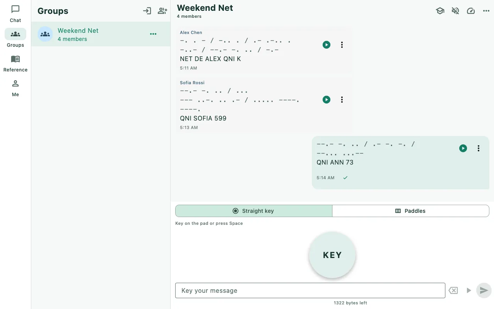
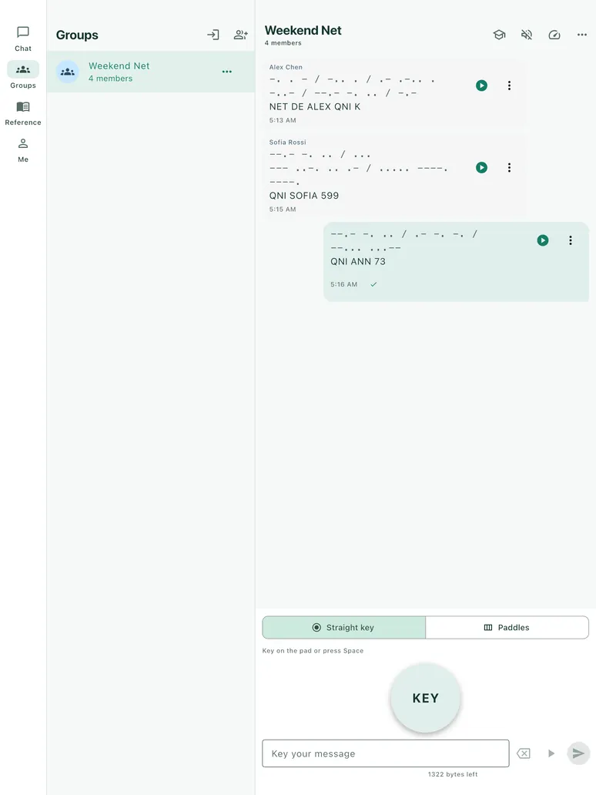
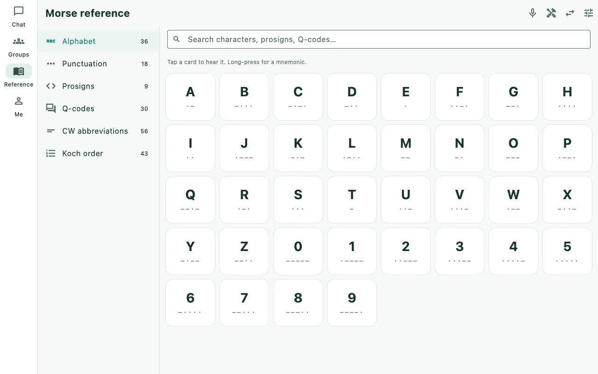
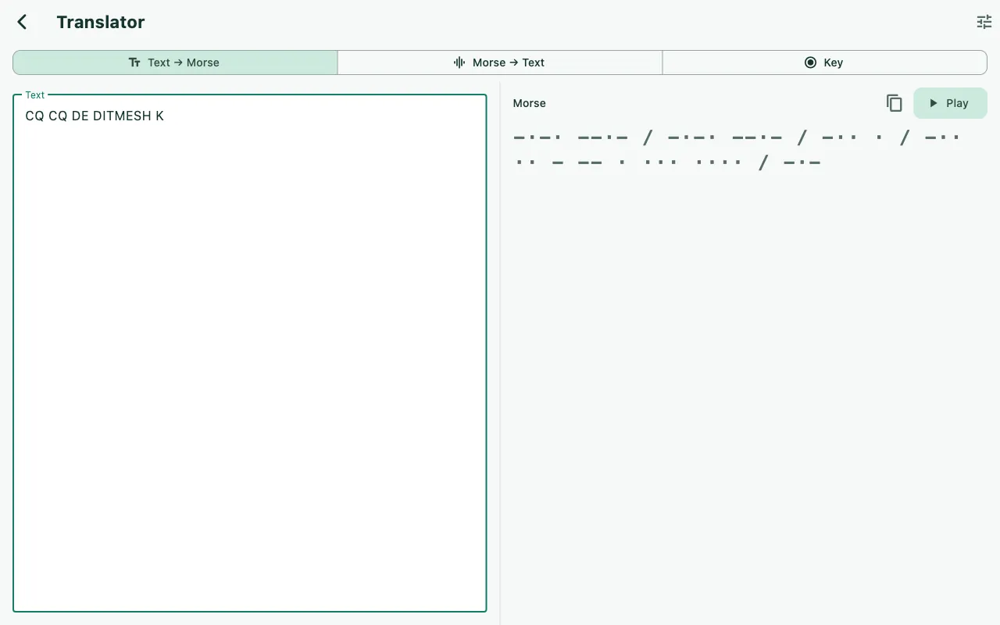
reference参考
The code book is built in.电码手册，就在应用里。
Tap any card to hear it. Look up a prosign mid-QSO, translate in both directions, or check how a Chinese telegraph code reads.点按任意卡片即可试听。通联中随时查程序信号、双向翻译，或查看中文电报码的含义。
- Alphabet, punctuation, prosigns, Q-codes and CW abbreviations, searchable.字母、标点、程序信号、Q 简语与 CW 缩语，均可搜索。
- Translator: text to Morse, Morse to text, and keying practice.翻译器：文字转电码、电码转文字，以及拍发练习。
- Chinese telegraph code interpretation for four-digit groups.中文电报码：解读四位数字码组。
- Radio tools, thirteen offline calculators: locator and beam heading, band plan and antenna lengths, power and S-meter, SWR, feedline loss, L-network matching, LC / attenuator arithmetic, link budget and radio horizon, CW speed, RST, sunrise and grey line, NCDXF beacons and UTC.无线电工具，十三个离线计算器：网格与方位、频段表与天线长度、功率与 S 表、驻波比、馈线损耗、L 型匹配、LC / 衰减器计算、链路预算与无线电视距、CW 速度、RST、日出与灰线、NCDXF 信标和 UTC。
identity & backup身份与备份
Your keys stay with you.密钥只在你手里。
Without an account server there is no “forgot password” link. DitMesh walks you through a backup the moment you create an identity, and gives you the tools to move it.没有账号服务器，也就没有“找回密码”。创建身份后，DitMesh 会立即引导你备份，并提供迁移身份的工具。
- Password-protected identity and an encrypted export you can preview and restore selectively.密码保护的身份，以及可预览、可选择性恢复的加密导出。
- Bring your Tox profile: import an existing Tox profile or restore a DitMesh backup.沿用 Tox 资料：导入已有的 Tox 资料，或恢复 DitMesh 备份。
- Contacts you approve: Tox ID and QR contacts, friend requests and blocked peers.由你决定的联系人：Tox ID 与二维码添加、好友申请、屏蔽联系人。
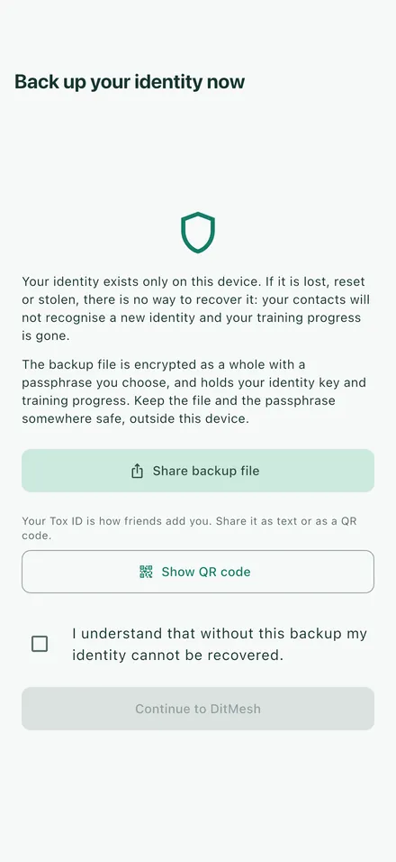
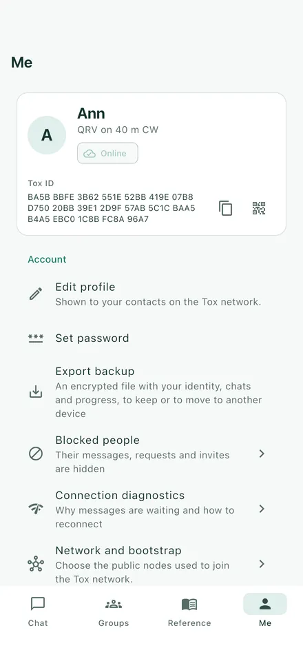
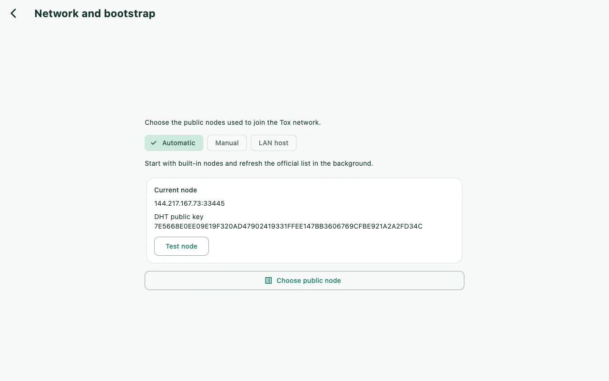
network网络
On the open Tox network, or only on your LAN.既能连公共 Tox 网络，也能只在局域网里用。
Bootstrap nodes help peers find each other; they cannot read your messages. You choose which nodes DitMesh uses, even before unlocking an identity.引导节点只帮助双方互相找到，无法读取消息。使用哪些节点由你决定，解锁身份之前也能设置。
- Automatic: built-in seeds (IPv4 and IPv6), refreshed from the official Tox node list in the background.自动：内置种子节点（IPv4 与 IPv6），后台刷新官方 Tox 节点列表。
- Manual: enter a node's host, port and key, and test it before you apply it.手动：填写节点地址、端口和公钥，应用前先测试连通性。
- LAN host: a desktop can host a node so phones and tablets on the same network can chat without the internet.局域网主机：桌面端可托管节点，同一网络中的手机和平板无需互联网也能聊天。
Ten languages十种语言
English, 简体中文, 繁體中文, 日本語, 한국어, Deutsch, Français, Español, Português and Русский.English、简体中文、繁體中文、日本語、한국어、Deutsch、Français、Español、Português、Русский。
Five styles五种风格
Classic Brass, Modern Calm, Night Radio, Paper Handbook and Fresh Cartoon, each in light, dark or system brightness.经典黄铜、现代静谧、夜间电台、纸质手册、清新卡通，均可选浅色、深色或跟随系统。
Interoperable跨客户端互通
Chat with Tox clients such as toxee. They receive ordinary text; original rhythm is shared between DitMesh clients.可与 toxee 等 Tox 客户端聊天。对方收到普通文字；原始节奏仅在 DitMesh 客户端之间传递。
Desktop-native桌面原生体验
Responsive panes, remembered window size, tray icon, unread badge and local notifications.自适应分栏、记住窗口尺寸、托盘图标、未读角标和本地通知。
03 — every screen03 — 每一块屏幕
One app, from phone to desktop.一个应用，从手机到桌面。
Real captures from the app with demo data. Desktop and tablet use a side-by-side layout; phones get a focused one-handed layout.均为应用真实截图（演示数据）。桌面与平板为分栏布局，手机为专注的单手布局。
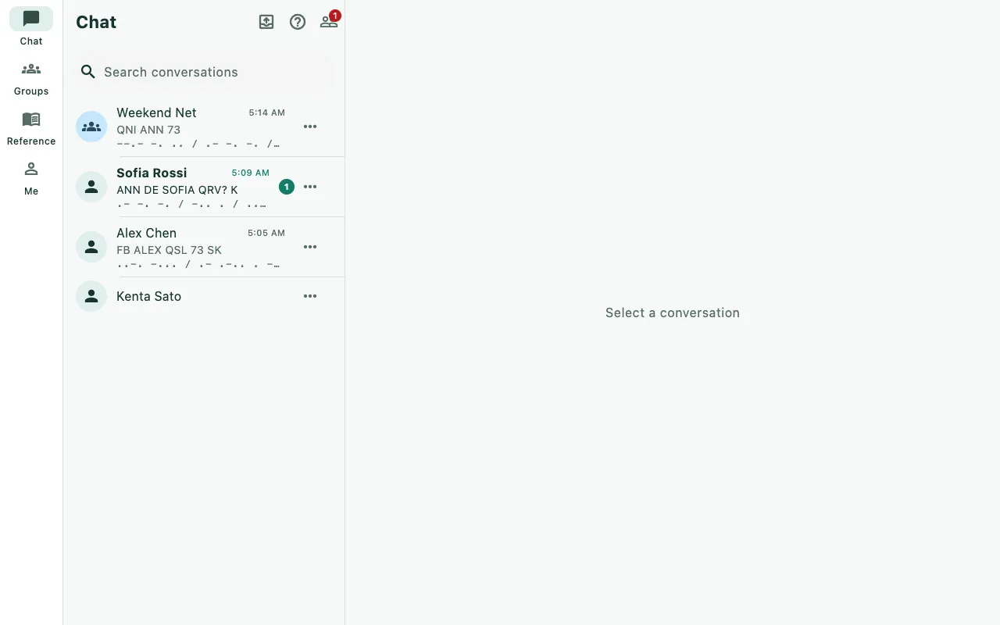
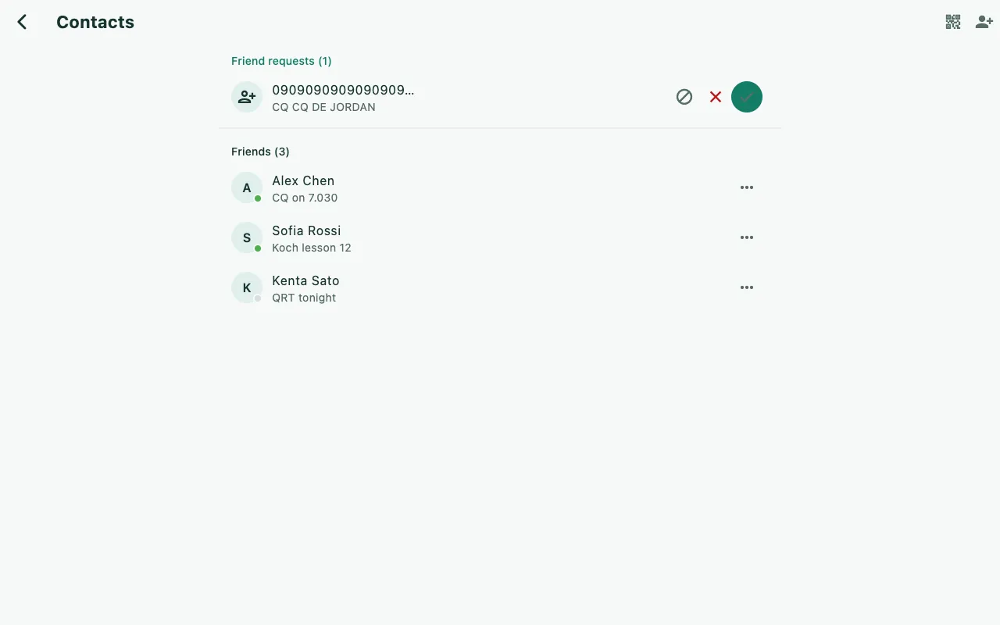
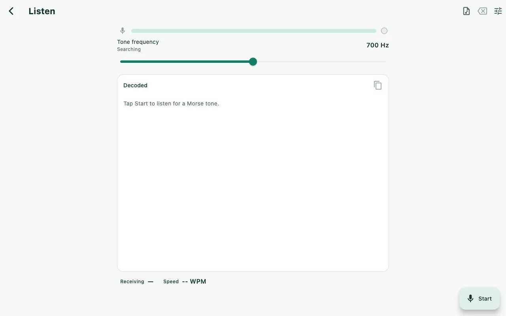
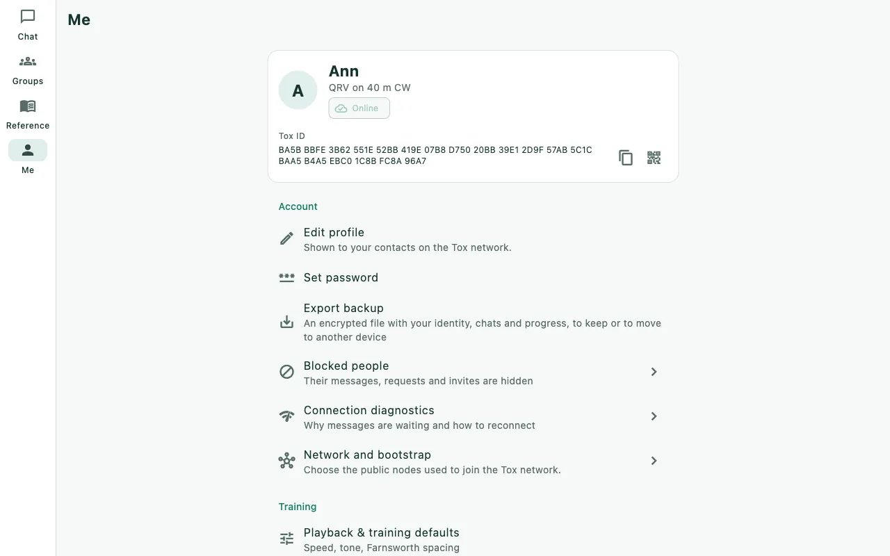
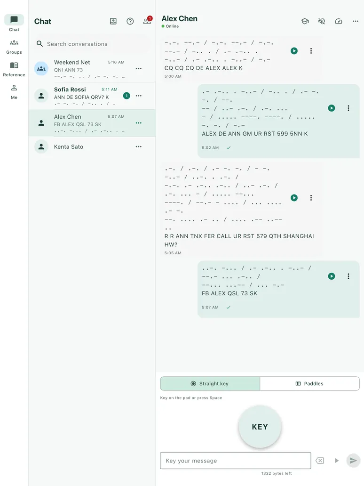
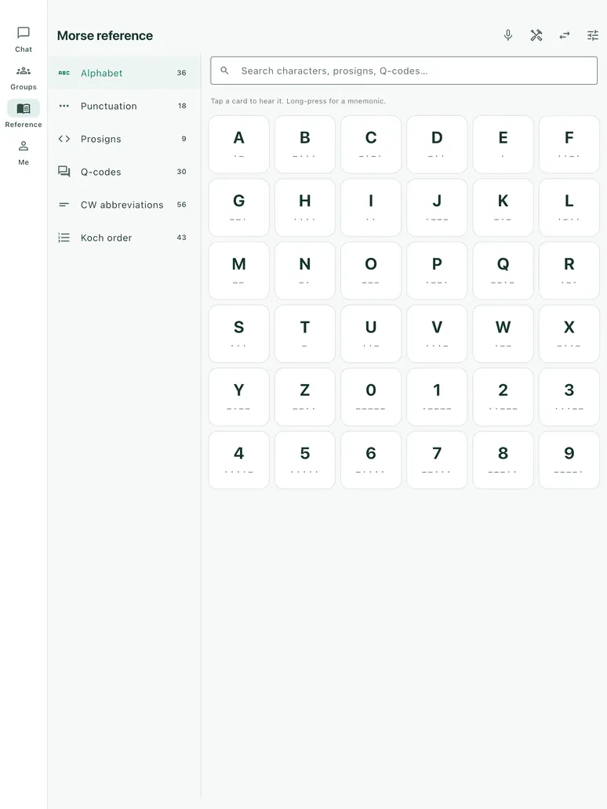
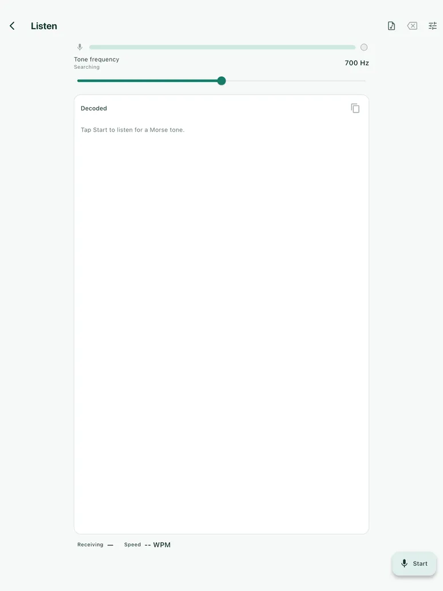
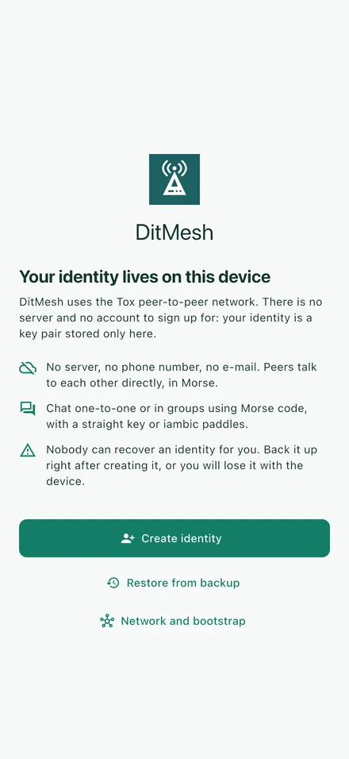
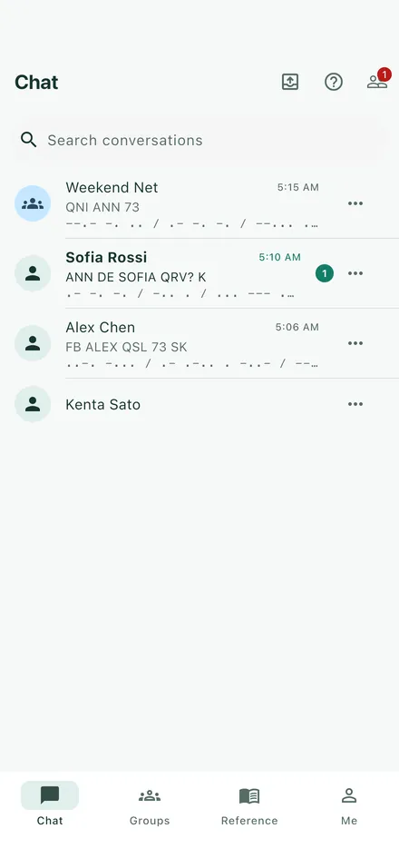
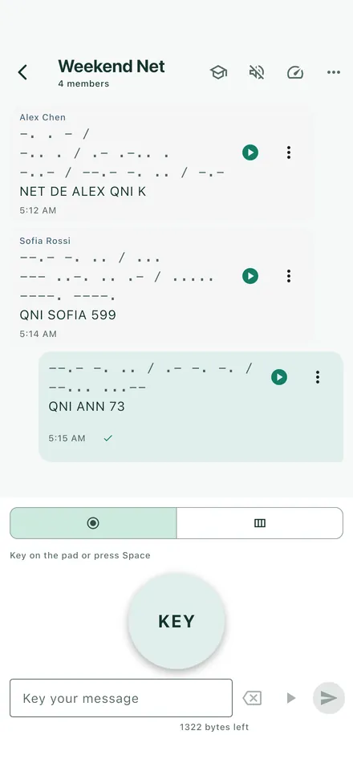
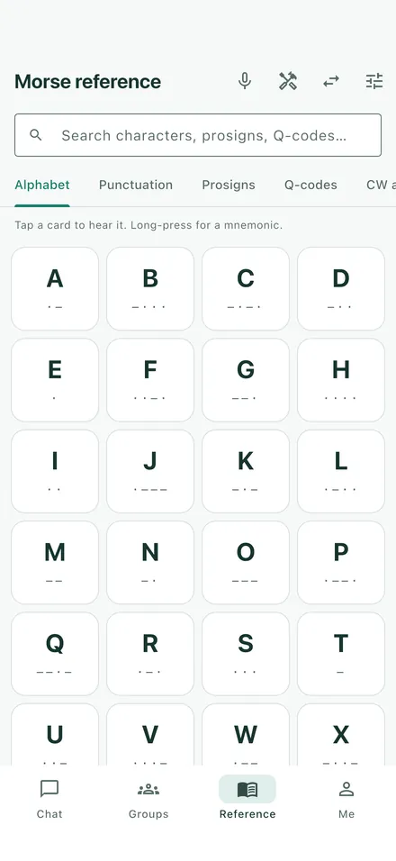
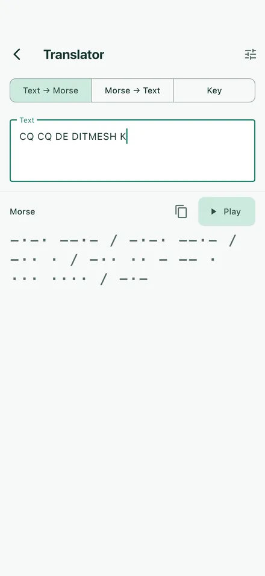
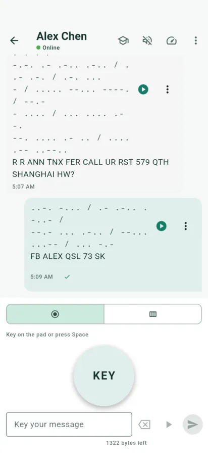
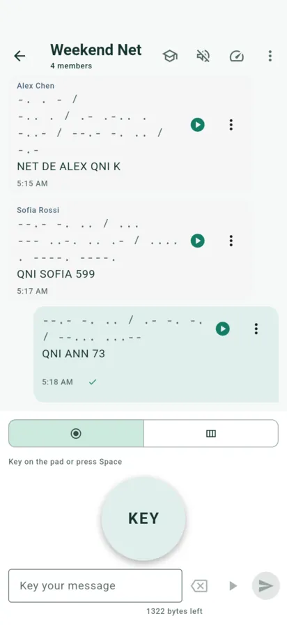
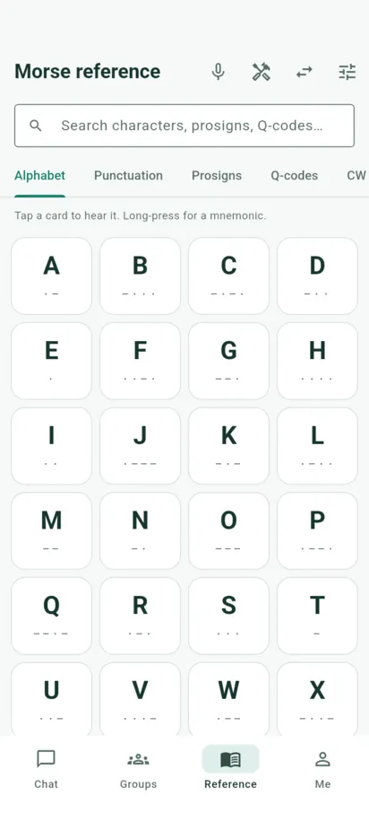
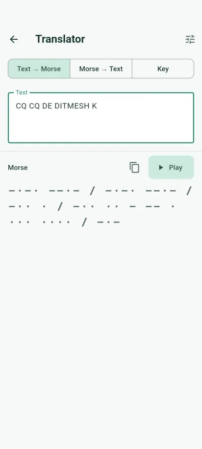
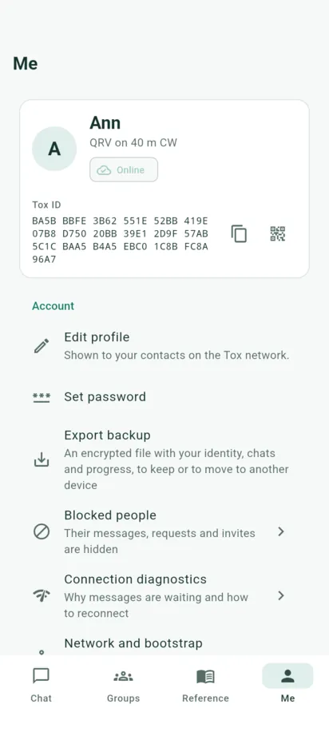
04 — download04 — 下载
Get DitMesh for your device.为你的设备下载 DitMesh。
Free, no account needed. Packages are built by CI from the public source and published on GitHub Releases.免费，无需注册。安装包由 CI 从公开源码构建，发布在 GitHub Releases。
macOS
your system你的系统macOS 13 Ventura or later · .pkg installer or .zipmacOS 13 Ventura 及以上 · .pkg 安装包或 .zip
Zip:压缩包： Apple siliconApple 芯片 · Intel
Windows
your system你的系统Windows 10 or later · x64Windows 10 及以上 · x64
Linux
your system你的系统x86_64 · glibc 2.38 or newer (Ubuntu 24.04, Debian 13, Fedora 39, RHEL 10 and later)x86_64 · glibc 2.38 及以上（Ubuntu 24.04、Debian 13、Fedora 39、RHEL 10 及更新版本）
Android
your system你的系统Android 7.0 or later · arm64, armv7, x86_64Android 7.0 及以上 · arm64、armv7、x86_64
App bundle (.aab)App bundle（.aab）
Signed with a debug key for sideloading and testing; not on Google Play yet.使用 debug 密钥签名，适合侧载和测试，暂未上架 Google Play。
iOS & iPadOS
your system你的系统iOS / iPadOS 14 or later · unsigned .ipaiOS / iPadOS 14 及以上 · 未签名 .ipa
Not on the App Store yet. Re-sign it or install it with a sideloading tool, or build from source with Xcode.暂未上架 App Store。请自行重新签名或用侧载工具安装，也可以用 Xcode 从源码构建。
Source code源代码
GPL-3.0 · Flutter 3.41.9 · Dart 3.11.5
Verify your download (SHA-256)校验下载文件（SHA-256）
Each release ships a每个版本都附带 SHA256SUMS. Compare it with the hash of the file you downloaded: shasum -a 256 <file> on macOS, sha256sum <file> on Linux, Get-FileHash <file> in PowerShell.。将它与你下载文件的哈希比对：macOS 用 shasum -a 256 <文件>，Linux 用 sha256sum <文件>，PowerShell 用 Get-FileHash <文件>。
05 — install & first contact05 — 安装与首次通联
On the air in a few minutes.几分钟就能开始通联。
- Pick the package for your Mac: Apple silicon for M-series Macs, Intel for older ones. Not sure? Apple menu → About This Mac → Chip.选择对应的安装包：M 系列 Mac 选 Apple 芯片，较早的选 Intel。不确定的话：苹果菜单 → 关于本机 → 查看芯片一项。
- Open the .pkg and follow the installer. The package is not notarized yet, so if macOS refuses to open it, go to System Settings → Privacy & Security and click Open Anyway.打开 .pkg 按提示安装。安装包尚未经过公证，如果 macOS 拒绝打开，请前往系统设置 → 隐私与安全性点击仍要打开。
- On macOS 15 or later, allow local network access when asked if you plan to use LAN nodes.在 macOS 15 及以上，若要使用局域网节点，请在系统询问时允许本地网络访问。
- Download the .msi installer, or the .zip if you prefer a portable folder.下载 .msi 安装包；想要免安装版本则下载 .zip。
- Run the installer. If SmartScreen shows “Windows protected your PC”, click More info → Run anyway.运行安装包。若 SmartScreen 提示“Windows 已保护你的电脑”，点击更多信息 → 仍要运行。
- Start DitMesh from the Start menu and allow network access if the firewall asks; Tox needs it to reach your contacts directly.从开始菜单启动 DitMesh。如果防火墙询问，请允许网络访问——Tox 需要它与联系人直连。
- Choose .deb for Debian and Ubuntu, .rpm for Fedora and RHEL, or the .tar.gz for other distributions. The build needs glibc 2.38 or newer, so Ubuntu 22.04, Debian 12 and RHEL 9 are too old.Debian、Ubuntu 选 .deb；Fedora、RHEL 选 .rpm；其他发行版用 .tar.gz。安装包需要 glibc 2.38 及以上，Ubuntu 22.04、Debian 12、RHEL 9 版本过旧。
- Install with your package manager so dependencies are pulled in, or unpack the archive and run the binary:用包管理器安装以自动处理依赖，或解压压缩包后直接运行：
- Download the APK on your phone, or transfer it from your computer.在手机上下载 APK，或从电脑传到手机。
- Open it. If Android asks, allow your browser or file manager to install unknown apps.打开它。若系统提示，允许浏览器或文件管理器安装未知应用。
- Allow notifications, and keep DitMesh running to receive messages; there is no push server to wake it.允许通知，并保持 DitMesh 运行以接收消息——没有推送服务器来唤醒它。
- Download the unsigned .ipa. iOS only installs signed apps, so it has to be signed for your device first.下载未签名 .ipa。iOS 只安装已签名的应用，需要先为你的设备签名。
- Sign and install it with a sideloading tool and your Apple ID, or re-sign it with your own development certificate.用侧载工具配合你的 Apple ID 签名安装，或用你自己的开发证书重新签名。
- Alternatively, build from source and run it on your device from Xcode.也可以从源码构建，通过 Xcode 安装到设备。
- Create an identity. Pick a display name and, ideally, a password. Your identity is generated on this device; nothing is registered anywhere.创建身份。填写显示名称，建议同时设置密码。身份在本机生成，不会注册到任何地方。
- Back it up straight away. The backup wizard saves an encrypted file. Nobody can recover an identity for you.立即备份。备份向导会保存一个加密文件。没有人能替你找回身份。
- Key to yourself first. The first-conversation guide opens note-to-self so you can try keying and listening.先发给自己。首次对话引导会打开“发给自己”，让你试着拍发和收听。
- Add a contact. Share your Tox ID or QR code from Me, or add theirs. You can chat once they accept.添加联系人。在我的中分享你的 Tox ID 或二维码，或添加对方的。对方通过后即可聊天。
- Call CQ. Key a message, preview it, and send. Both of you need DitMesh running and reachable for delivery.呼叫 CQ。拍发、预览、发送。双方都需要运行 DitMesh 且网络可达，消息才能送达。
06 — under the hood06 — 技术架构
Yours to build, audit and own.可构建、可审计、真正属于你。
DitMesh is a Flutter app. Tim2Tox bridges it to c-toxcore, so the same Dart code talks to the Tox network on all five platforms.DitMesh 是一个 Flutter 应用，Tim2Tox 把它接到 c-toxcore 上，同一套 Dart 代码在五个平台上连接 Tox 网络。
Per-platform build and packaging notes are in the documentation.各平台的构建与打包说明见项目文档。
07 — faq07 — 常见问题
Questions, answered.你可能想问。
Do I need an account?需要注册账号吗？
No. A Tox identity is generated on your device. Back it up from Me, because there is no central account provider to recover it.不需要。Tox 身份在设备本地生成。请在我的中备份，因为没有中心账号服务可以帮你恢复。
Do I have to know Morse code already?必须先会摩尔斯电码吗？
Can I message someone who is offline?对方离线时能发消息吗？
The message waits in the local send queue and goes out when both of you are running and reachable. There is no mailbox in the cloud, so keep DitMesh running to receive messages. You can cancel a queued send or retry a failed one at any time.消息会留在本地待发送队列，双方都运行且网络可达时自动发出。云端没有“信箱”，请保持 DitMesh 运行以接收消息。排队中的消息可以取消，失败的可以重试。
Is my message stored on a server? Who can see what?消息会存在服务器上吗？谁能看到什么？
No messaging or push server is involved. Tox carries encrypted data peer to peer; history and backups stay on your devices. Bootstrap nodes only help peers find each other. Like any direct peer-to-peer connection, Tox does not hide your IP address from your contacts. See the privacy policy.没有任何聊天或推送服务器。Tox 点对点传输加密数据，历史记录和备份保留在你的设备上；引导节点只帮助双方互相找到。和所有点对点直连一样，Tox 不会对联系人隐藏你的 IP 地址。详见隐私政策。
Can I talk to toxee or other Tox clients?能和 toxee 或其他 Tox 客户端聊天吗？
Yes. DitMesh speaks the standard Tox protocol, so toxee and other clients receive your messages as ordinary text. Original keying rhythm is exchanged only between DitMesh clients; for other messages, playback uses your own speed.可以。DitMesh 使用标准 Tox 协议，toxee 等客户端会以普通文字收到你的消息。原始拍发节奏只在 DitMesh 客户端之间传递；其他消息按你自己设定的速度播放。
Why is the Android build debug-signed and the iOS build unsigned?为什么 Android 版是 debug 签名、iOS 版未签名？
No store release keys are configured yet. The Android packages suit sideloading and testing, not Google Play; the iOS package must be re-signed or sideloaded. Verify any download against SHA256SUMS.目前尚未配置应用商店发布密钥。Android 安装包适合侧载和测试，不用于 Google Play；iOS 安装包需要重新签名或侧载。下载后可用 SHA256SUMS 校验。
What is the relationship with MorseCQ?DitMesh 与 MorseCQ 有什么关系？
Who makes DitMesh, and what does it cost?DitMesh 由谁开发？收费吗？
DitMesh is developed in the open by agentx-icu under GPL-3.0. It is free, with no ads, analytics or tracking code.DitMesh 由 agentx-icu 以 GPL-3.0 公开开发。完全免费，没有广告、统计分析或追踪代码。